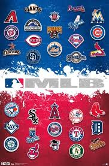

Overview
Purpose
Baseball is America's pastime. With that being said, many people are falling away and forgetting about America's true sport. This website is to inform, enlighten, and fire up those who are interested in learning more about baseball!
Audience
Need updated stats all in one place? Well, that place is here.
Purpose
This website is to inform, enlighten, and fire up those who are interested in learning more about baseball! Whether it is stats, players, rules, MLB, or Minors, this website will take you to all the places you need to learn more about baseball! I look at stats every day, but there are so many different websites that are better than others for different purposes. This website will have all the best places to go in one place. What happens when you want to find highlight videos after a big game? You find the button with the link that goes to the best place for up-to-date highlights! This page helps those who don't know where to go to find all the questions, media, and stats in the game of baseball.
Statistics
This website is to help those find their baseball needs through the help of other websites as well! To find all batting stats, it is as simple as looking on the page for Batting Stats, and you click the photo link and it will take you to a website that is reliable and updated with all the batting stats. The same goes for pitching stats as well. Look for the title Pitching Stats and find the picture with the link and it will take you to the correct spot for all pitching stats. This includes the league leaders stats too.
America's Past time
With all the updates with stats and scores that this website helps the user with, it is in the hopes to get baseball the love that it deserves since the love for baseball is slowly fading away. Baseball is America’s pastime and needs to remain that. There is so much history with the sport itself and also this country as well. Baseball provides the escape from reality from all over the world now as those in the Caribbean and Central and South America are really taking the sport into their hearts as well.
Colors
Something that is really important to me with this website page is that it needs to look neat and presentable. Something that makes people stay on a web page is that if it looks nice and easy to read, people will continue using your page! This webpage will have the main colors as it is the main colors of my website, red, blue, and white. These three colors go really well together and on top of that that is the MLB’s main colors and the colors of the United States.
Images
Wireframes
.png)
.png)
.png)
Branding
Website Logo

Style Guide
Color Palette
Palette URL:
https://coolors.co/d64045-ffffff-467599| Primary | Secondary | Accent 1 | |
|---|---|---|---|
| [#396E94] | [#E7C24F] | [#A43312] | [#AABD8C] |